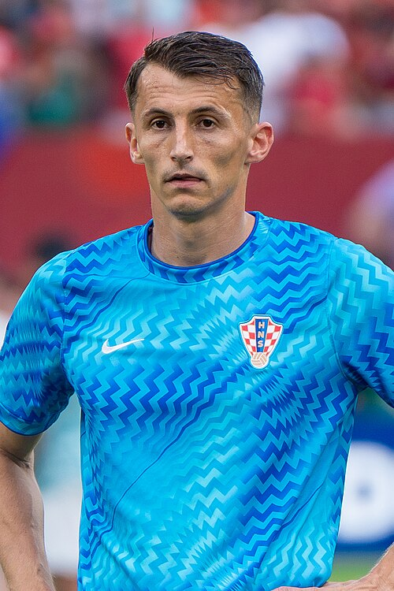

Ezzcoins › Player pages › Ante Budimir
82
ST

Budimir
PAC65
SHO83
PAS63
DRI74
DEF36
PHY81
Photo (cropped): Bryan Berlin · CC BY-SA 4.0 · Wikimedia Commons
Photo source
https://commons.wikimedia.org/wiki/File:Ante_Budimir_Croatia_v_Portugal_2_July_2026-034.jpg
Licence: https://creativecommons.org/licenses/by-sa/4.0
Ante Budimir
82 ST · CA Osasuna · LALIGA EA SPORTS ·  Croatia
Croatia
No console price yet. Add this player to your watchlist on Ezzcoins: the most-watched players get a price every hour.
77Meta rating · ST −5 vs overall
PAC65
SHO83
PAS63
DRI74
DEF36
PHY81
Chemistry style
Turn on JavaScript to see this card with each chemistry style.
- Position
- ST
- Club
- CA Osasuna
- League
- LALIGA EA SPORTS
- Nation
- Croatia
- Skill moves
- 3★
- Weak foot
- 4★
- Preferred foot
- Left
Meta rating: Ezzcoins' own estimate of how well this card plays in game, worked out from its stats for each position it can play, its skill moves, weak foot and PlayStyle+. An average card scores about its overall rating; higher means it plays above its rating.
Watch on Ezzcoins